Use Case
Many organizations start small with AWS and once they see the benefits of the AWS, they spread the usage of AWS across the company in different departments. And in each of these departments multiple IAM users are created for different users with the appropriate permissions.
Overtime as the proliferation of the AWS in the organization increases, they would be interested in how the different departments and groups are using the AWS services. This is where CloudTrail comes into picture.
CloudTrial enable governance, compliance, and operational and risk auditing of your AWS account. CloudTrial is enabled by default and captures Management events (launching EC2/RDS etc) and Data events (reading data in S3, calling a Lambda function etc).
The events will be stored in the CloudTrail by default for 90 days and any events beyond 90 days will be automatically deleted by CloudTrail. To record an event that extends beyond 90 days we have to use CloudTrail Trial (note the name repeated twice) which stores the events in the specified S3 bucket for ever unless deleted explicitly.
Once we have the data in S3, we can do the analytics using Athena to get some meaningful insights on the usage of AWS in the different departments and groups. Some of them are
- How many EC2/RDS are being created by each of the group in a particular month?
- How is the EC2/RDS usage growing/declining for a particular group?
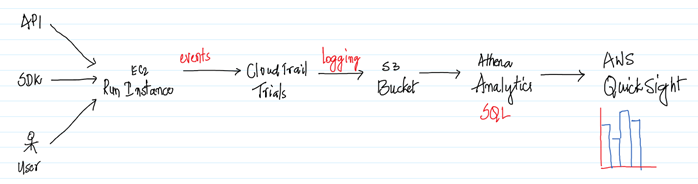
To take it further we should be able to do some visualizations using QuickSight. This use case will cover on how to capture the data using CloudTrail Trail in S3 and do analytics using AWS Athena. Integrating AWS Athena with AWS QuickSight will be skipped as this has been addressed in one of the previous use cases.
Note that by once we enable the CloudTrail Trail, it will start capturing all the events in S3 and depending on how long the CloudTrail Trail was enabled we might be getting some interesting insights or not. The users of this document can enable the CloudTrail Trails feature a few days ahead, so that there is enough data for them to get good insights out of it.
AWS Services: CloudTrail, Athena, EC2, RDS
-- Navigate to the CloudTrial Management Console and click on the burger on the top left.

-- Click on the Event History and here we can see the events for the last 90
days and any events before 90 days will be automatically deleted by CloudTrail
service.
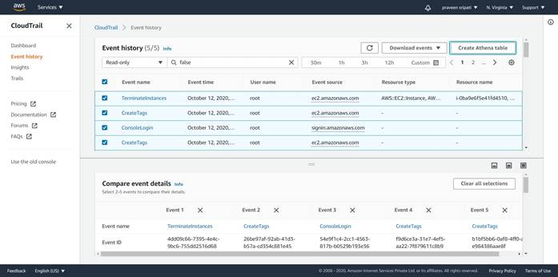
-- To preserve the events beyond 90 days then a CloudTrail Trails has to be created. Click on Trials and click on “Create trial”.
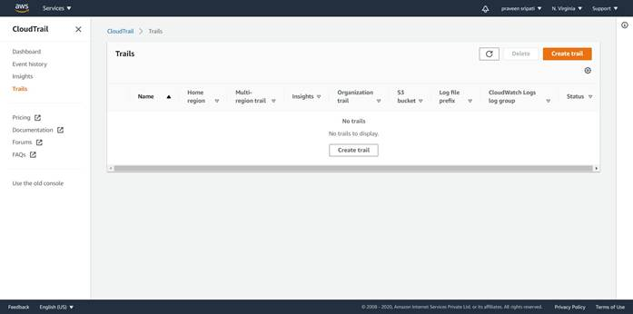
-- Enter the Trial name and enter a S3 bucket name as shown below. The S3 bucket will be automatically created and all the events would be written to it as we perform any actions in AWS.
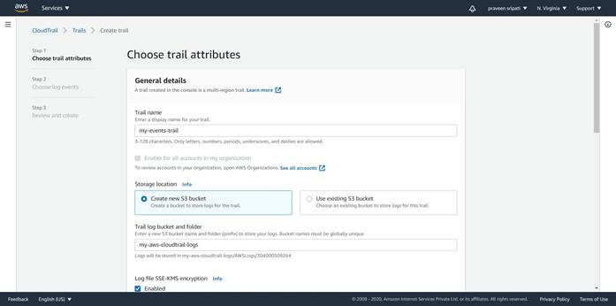
-- Make sure the Enabled option is not selected for “Log file SSE-KMS encryption”. This requires a KMS key to be created for encrypting the data and there is an additional cost around it, so we will skip this for now.
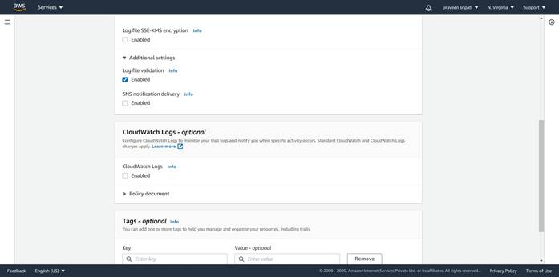
-- Click on Next at the bottom.

-- Again, click on Next. Make sure to select only the Management events in the Event type. Click on Next.
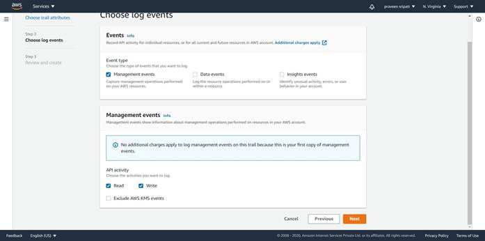
-- Review the details of the CloudTrial Trials and click on “Create trial”.
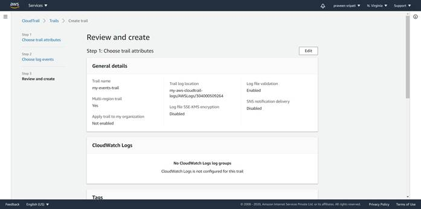
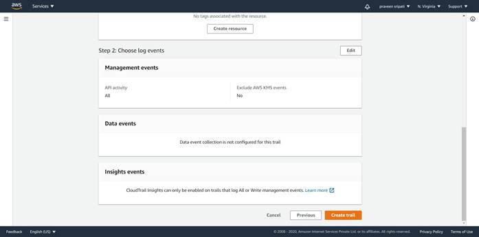
-- The trail should be created as shown below.
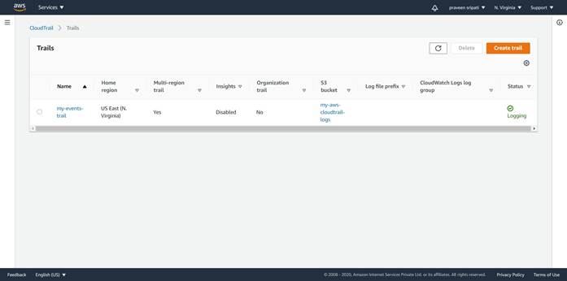
-- CloudTrail will automatically create an S3 bucket as shown below.
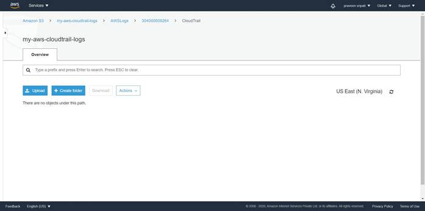
-- And with time there would be more and more file logged into the S3 buckets as shown below.
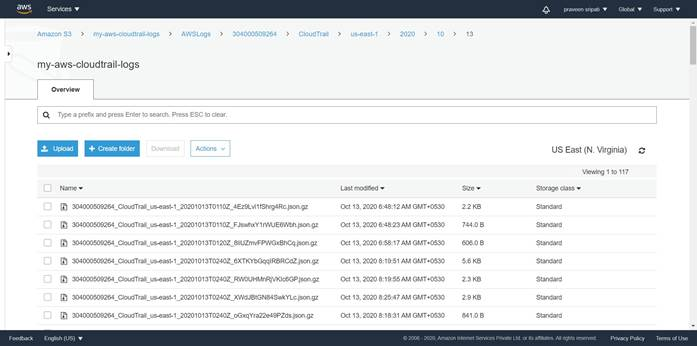
-- Go back to the “Event history” tab and click on “Create Athena table”.
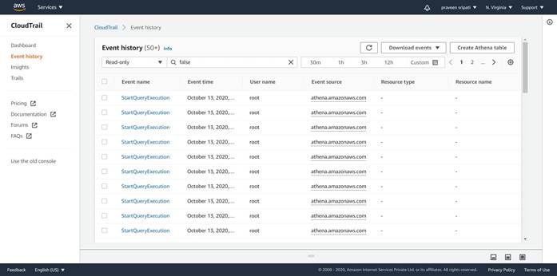
-- Select the S3 bucket mentioned in the previous steps as the Storage location and click on “Create table”. Note down the create table DDL statement, this can be later used to run any additional queries later.
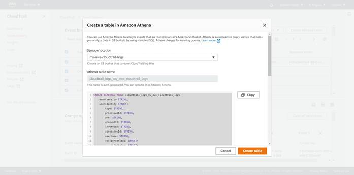
-- Navigate to the Athena Management Console and there would be a table created as shown below in the default database.
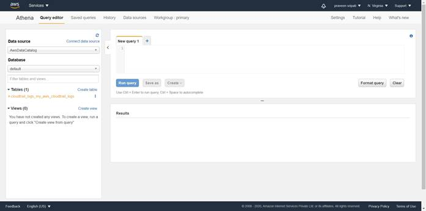
-- Go to the IAM Management Console and create 2 users “devuser001” and “produser001” with “AmazonEC2FullAccess” and “AmazonRDSFullAccess” policies attached to the users. We are trying to mimic the actions performed by these users in the production and development groups.
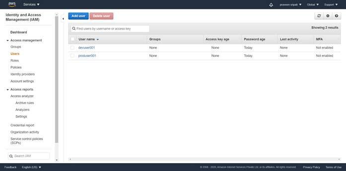
-- The users would be created as shown below.
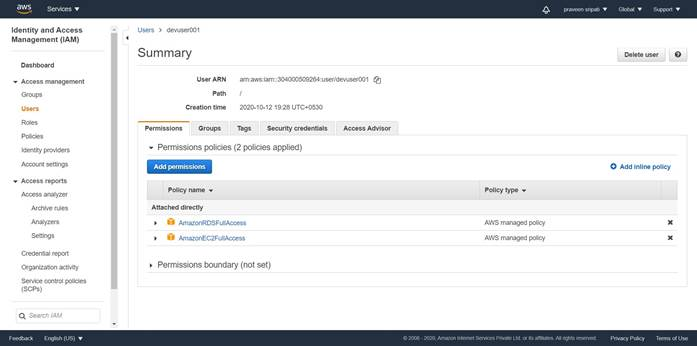
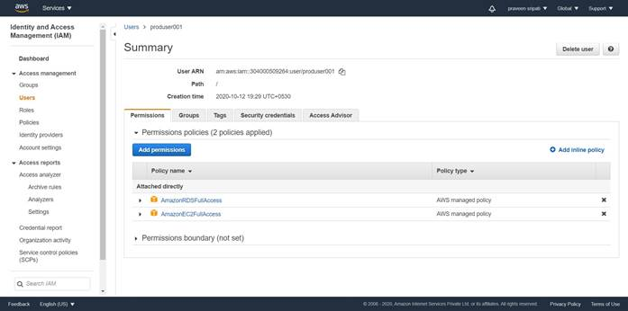
-- Login as the devuser001 and create a bunch of EC2 and RDS instances. Make sure to use t2.micro and db.t2.micro as they do fall under the free category.
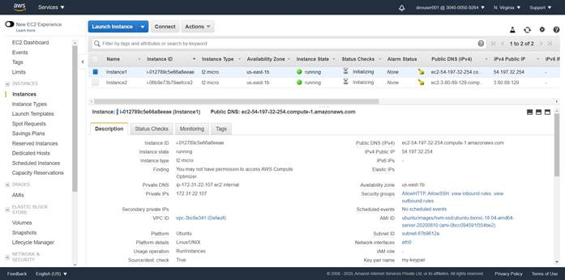
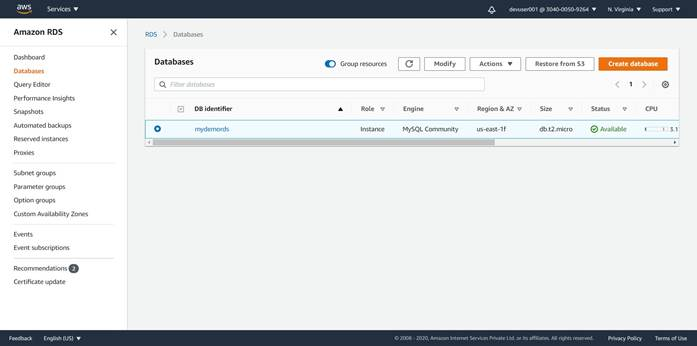
-- Likewise, login as the produser001 and create a bunch of EC2 and RDS instances.
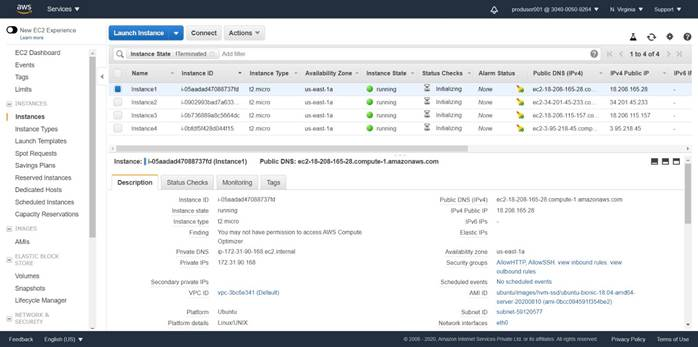
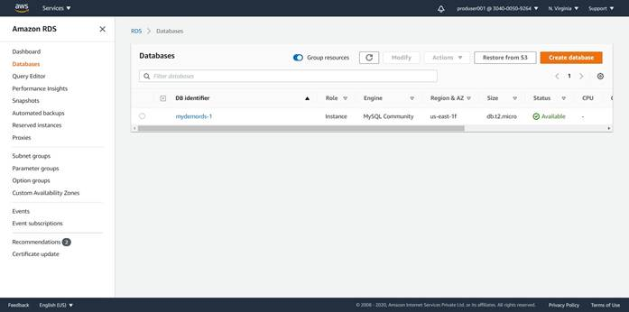
-- Go back to the Athena Management Console and execute the below query to get the number of events logged into the CloudTrail till now.
select count(*) from cloudtrail_logs_my_aws_cloudtrail_logs;
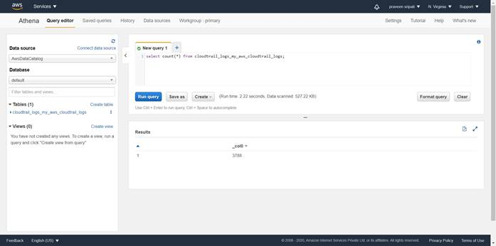
-- Execute the below query to get the users whose activities have been logged into the CloudTrail. Observe that it displays devuser001 and produser001, as actions have been performed earlier against these users in the previous steps.
select distinct(userIdentity.userName) from cloudtrail_logs_my_aws_cloudtrail_logs;
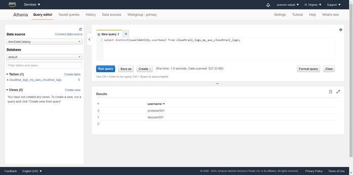
-- Execute the below query to find the distinct or unique operations performed by devusers. This can be used to identify any anomaly or deviations from the regular operations, which is very useful for the for the sake of security.
Let’s say we have seen an activity around Route53 performed by an account for which he or she should not have any permissions to, there might be a probability that the IAM permissions set for the user are not correct.
select distinct(eventName) from cloudtrail_logs_my_aws_cloudtrail_logs where userIdentity.userName like 'devuser%';
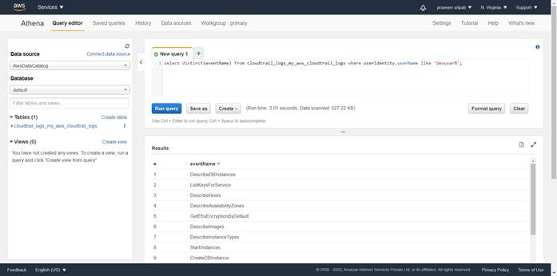
-- Execute the below query to get the number of EC2 instances created by the development group in the month of October. Note to change the start and end time appropriately to get some results. Also, the eventName can be changed from CreateDBInstance to RunInstances to get the number of EC2 instances started. Also, devuser can be changed to produser to get the data around the production group.
select count(*) from cloudtrail_logs_my_aws_cloudtrail_logs where userIdentity.userName like 'devuser%' and eventName = 'CreateDBInstance' and eventTime > '2020-10-01T00:00:00Z' and eventtime < '2020-10-31T23:59:59Z';
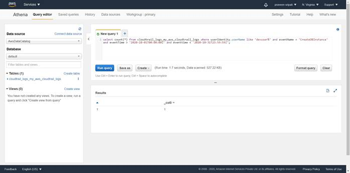
Conclusion
In this use case we figured out how to use a combination of CloutTrail/Athena/S3 to figure out the AWS resource usage across groups like production, development. And by changing the query we can also get the data across different months also. As mentioned earlier, we also should be able to integrate with QuickSight to plot visualizations, integration of Athena with the QuickSight has been addressed in one of the previous use cases.
While preparing for this use case, CloudTrail Trials has been enabled only for a day or two and so there is not much of data, once the CloudTrail Trail has gathered data in S3 for a couple of days in a live account as in the case of production, we would be getting much more interesting results in the use case.